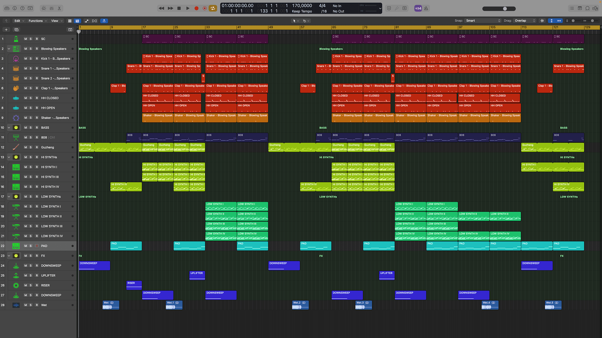

Music production
I turn musical ideas into complete works, offering services in composition, arrangement, and recording to take your projects from conception to sonic realization.

I turn musical ideas into complete works, offering services in composition, arrangement, and recording to take your projects from conception to sonic realization.
I refine the quality and coherence of your recordings by correcting errors, eliminating unwanted noises, and making precise adjustments to achieve a polished and professional sound.
I blend and balance all the tracks in your project to create a harmonious and immersive mix. I adjust levels, effects, and panoramas to ensure a captivating auditory experience.
I optimize the overall quality of your music, refining the final mix to make it stand out on any platform. I fine-tune the equalization, dynamics, and overall coherence to achieve a consistent and appealing sound.
I transform the tone of your guitar or bass recordings using reamping techniques, providing unique textures and nuances to give your sound a distinctive touch.
Each service is delivered with dedication and expertise, ensuring that every sonic detail is handled with the utmost care to achieve results that exceed your expectations.